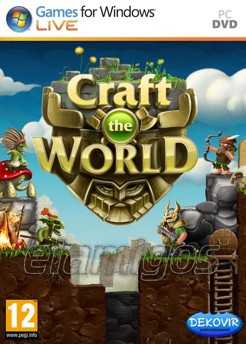

Craft The World v1.9.006 707 MB
Género: Gestión, Estrategia
Craft The World es un juego de estrategia sandbox único, una combinación de
Dungeon Keeper, Terraria y Dwarf Fortress. Explora un mundo generado
aleatoriamente poblado por criaturas peligrosas, construye una fortaleza enana,
reúne recursos y crea todos los elementos, armas y armaduras que necesitas.